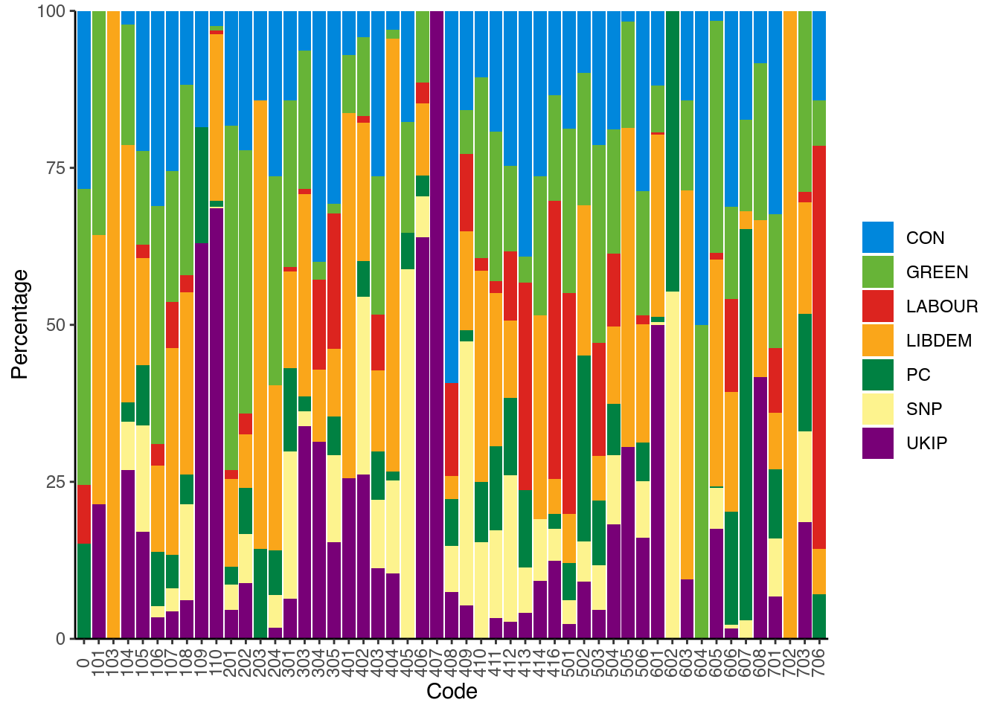
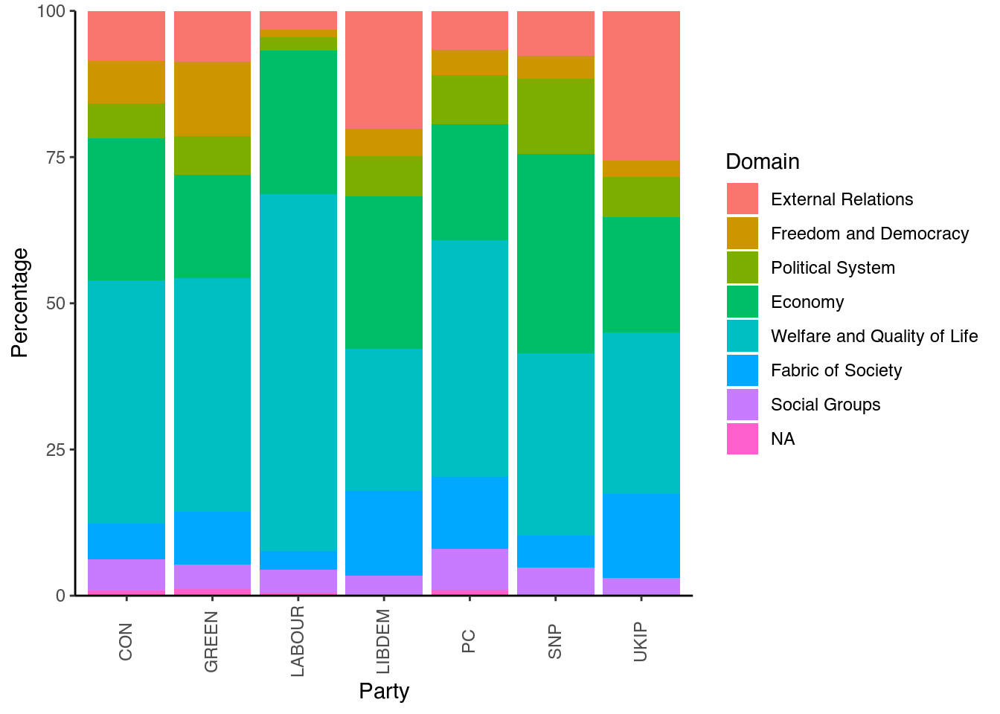

While with scaling we try to place our texts on a scale, with supervised methods we go back to what we did with dictionary analysis: classification. Within quanteda there are many different models for supervised methods, of which we will cover two. These are Support Vector Machines (SVM) and Naive Bayes (NB). The first classifies texts by looking at their position on a hyperplane, the second by their (Bayesian) probabilities. To show how they work, we will look at an example of SVM in quanteda and one in RTextTools, and an example of NB in quanteda.
For the SVM, we will start with a textbook example using a dataset that comes with RTextTools package. The US Congress dataset contains 1000 sentences drawn from bills debated in the 107 US Congress. With the following commands we load and view the US Congress data:
library("RTextTools")## Loading required package: SparseM##
## Attaching package: 'SparseM'## The following object is masked from 'package:base':
##
## backsolve## Registered S3 method overwritten by 'tree':
## method from
## print.tree clidata(USCongress)As you can see, the variable text corresponds to sentences (one per row) while the variable major corresponds to a category that was manually coded for each of these sentences. The goal of the supervised learning task is to use part of this dataset to train a certain algorithm, and then use the trained algorithm to assign categories to the remaining sentences. Since we know the coded categories for the remaining sentences, we will be able to evaluate how well this training was in guessing/estimating what the codes for these sentences were. We start by creating a document term matrix. The options specified in the command instruct R to look into the text variable and remove numbers, stem words, and remove words that appear in less than 2% of the sentences in the dataset.
doc_matrix <- create_matrix(USCongress$text, language = "english", removeNumbers = TRUE, stemWords = TRUE, removeSparseTerms = 0.998)## Warning in TermDocumentMatrix.SimpleCorpus(x, control): custom functions are
## ignored## Warning in TermDocumentMatrix.SimpleCorpus(x, control): custom tokenizer is
## ignoreddoc_matrix## <<DocumentTermMatrix (documents: 4449, terms: 1015)>>
## Non-/sparse entries: 46473/4469262
## Sparsity : 99%
## Maximal term length: 18
## Weighting : term frequency (tf)Note that RTextTools gives you plenty of options in preprocessing. Apart from the options used above, you can also strip whitespace, remove punctuation, and remove stopwords from lists that are already defined in the package. Stemming and stopword removal is language specific, so when you select the language in the option as above (language=''english''), the stemming and stopword removal will be done according to the language of your choice. At the moment, the stopwords included are those for Danish, Dutch, English, Finnish, French, German, Italian, Norwegian, Portuguese, Russian, Spanish, and Swedish.
We then create a container parsing the document matrix into a training set, and a test set. The training set will be used to train the algorithm and the test set to test how well this algorithm was trained. The following command instructs R to use the first 4000 sentences for the training set the remaining 449 sentences for the test set. Moreover, we specify to append to the document matrix the variable that contains the assigned coders:
container <- create_container(doc_matrix, USCongress$major, trainSize = 1:4000, testSize = 4001:4449, virgin = FALSE)We can then train a model using one of the available algorithms. For instance, we can use the Support Vector Machines algorithm (SVM) as follows:
SVM <- train_model(container, "SVM")Other algorithms available are glmnet (GLMNET), maximum entropy (MAXENT), scaled linear discriminant analysis (SLDA), bagging (BAGGING), boosting (BOOSTING), random forest (RF), neural networks (NNET), classification tree (TREE).
We then use the model we just trained to classify the texts in the test set. The following command instructs R to classify the documents in the test set of the container using the SVM model that we previously trained.
SVM_CLASSIFY <- classify_model(container, SVM)We can also view the classification that was performed by the SVM model as follows. The first columns corresponds to the label that was assigned to each of the 449 sentences in the training set, while the second column gives the probability that the sentence was assigned to that particular category by the SVM algorithm. As you can see, while the probability for some sentences is quite high (e.g. 0.99 for sentence 3) for others is quite low (e.g. 0.13 for sentence 20) even though the classification always chooses the category with the highest probability.
View(SVM_CLASSIFY)The next step is to check the performance of the model we just tested in terms of classification. To do this, we first request a function which returns a container with different summaries. For instance, we can request summaries on the basis of the labels that were attached to the sentences, the documents (or in this case, the sentences) by label, or on the basis of the algorithm.
analytics <- create_analytics(container,cbind(SVM_CLASSIFY))
summary(analytics)## ENSEMBLE SUMMARY
##
## n-ENSEMBLE COVERAGE n-ENSEMBLE RECALL
## n >= 1 1 0.74
##
##
## ALGORITHM PERFORMANCE
##
## SVM_PRECISION SVM_RECALL SVM_FSCORE
## 0.6370 0.6355 0.6270Precision gives the proportion of bills that were classified as belonging to a category and actually belong to this category (true positives) to all the bills that were classified in that category (irrespective of where they belong). Recall is the proportion of bills that were classified as belonging to a category and actually belong to this category (true positives) to all the bills that belong to this category (true positives plus false negatives). The F score is a weighted average between precision and recall ranging fro 0 to 1.
Instead of using a separate package, we can also use quanteda to carry out an SVM. For this, we again load the reviews we used earlier, select 1000 of them at random, and place them into our corpus:
detach("package:RTextTools", unload = TRUE)
set.seed(42)
library(quanteda.classifiers)
corpus_reviews <- corpus_sample(data_corpus_LMRD, 1000)Our aim here will be to see how well the SVM algorithm can predict the rating of the reviews. To do this, we first have to create a new variable prediction. This variable contains the same scores as the original rating. Then, we remove 30% of the scores and replace them with NA. We do so by creating a missing variable what contains 30% 0s and 70% 1s. We then place the 0s with NAs. These NA scores are then the ones we want the algorithm to predict. Finally, we add the new variable to the corpus:
prediction <- corpus_reviews$rating
set.seed(42)
missing <- rbinom(1000, 1, 0.7)
prediction[missing == 0] <- NA
docvars(corpus_reviews, "prediction") <- predictionWe then transform the corpus into a data frame, and also remove stopwords, numbers and punctuation:
dfm_reviews <- dfm(corpus_reviews, remove = stopwords("english"), remove_punct = TRUE, remove_numbers = TRUE)## Warning: 'dfm.corpus()' is deprecated. Use 'tokens()' first.## Warning: '...' should not be used for tokens() arguments; use 'tokens()' first.## Warning: 'remove' is deprecated; use dfm_remove() insteadNow we can run the SVM algorithm. To do so, we tell the model on which dfm we want to run our model, and which variable contains the scores to train the algorithm. Here, this is our prediction variable with the missing data:
library(quanteda.textmodels)
svm_reviews <- textmodel_svm(dfm_reviews, y = docvars(dfm_reviews, "prediction"))
svm_reviews##
## Call:
## textmodel_svm.dfm(x = dfm_reviews, y = docvars(dfm_reviews, "prediction"))
##
## 707 training documents; 129,216 fitted features.
## Method: L2-regularized L2-loss support vector classification dual (L2R_L2LOSS_SVC_DUAL)Here we see that the algorithm used 720 texts to train the model (the one with a score) and fitted 133,728 features. The latter refers to the total number of words in the training texts and not only the unique ones. Now we can use this model to predict the ratings we removed earlier:
svm_predict <- predict(svm_reviews)While we can of course look at the resulting numbers, we can also place them in a two-way table with the actual rating, to see how well the algorithm did:
rating <- corpus_reviews$rating
table_data <- as.data.frame(cbind(svm_predict, rating))
table(table_data$svm_predict,table_data$rating)##
## 1 2 3 4 7 8 9 10
## 1 175 14 10 11 4 3 1 6
## 2 13 65 5 3 0 0 0 3
## 3 5 2 82 4 1 4 0 3
## 4 4 5 5 90 1 5 2 6
## 7 0 1 2 2 75 6 0 1
## 8 2 1 1 0 3 83 5 7
## 9 3 0 1 6 4 11 74 7
## 10 1 3 3 2 3 10 14 137Here, the table shows the prediction of the algorithm from top to bottom and the original rating from left to right. What we want is that all cases are on the diagonal: in that case, the prediction is the same as the original rating. Here, this happens in the majority of cases. Also, only in a few cases is the algorithm far off.
For the NB example, we will use data from the Manifesto Project [@Volkens2019a], also known as the Comparative Manifesto Project (CMP), Manifesto Research Group (MRG), and MARPOR (Manifesto Research on Political Representation)). After you have signed up and downloaded the API key, load the package and set the key:
library(manifestoR)
mp_setapikey("manifesto_apikey.txt")While we can download the whole dataset, as it is rather large, it makes more sense to only download download a part of it. Here, we take the manifestos for the United Kingdom in 2015. To tell R we want only these documents, we make a small dataframe listing the party and the year we want, and then place this into the mp_corpus command. Note that instead of the names of the parties, the Manifesto Project assigns unique codes to each party. To see which code belongs to which party, see: https://manifesto-project.wzb.eu/down/data/2019a/codebooks/parties_MPDataset_MPDS2019a.pdf. Also note that the date includes both the year and month of the election:
manifestos <- data.frame(party=c(51320, 51620, 51110, 51421, 51901, 51902, 51951), date=c(201505, 201505, 201505, 201505, 201505, 201505, 201505))
manifesto_corpus <- mp_corpus(manifestos)## Connecting to Manifesto Project DB API... corpus version: 2020-2
## Connecting to Manifesto Project DB API... corpus version: 2020-2For now, we are only interested in the (quasi)-sentences the of the manifestos, the codes the coders gave them, and names of the parties. To make everything more clear, we will take these elements from the corpus, combine them into a new data-frame, and remove all the NA values. We do this because otherwise the data would also include the headers and titles of the document, which do not have any codes assigned to them:
detach("package:httr", unload = TRUE)## Warning: 'httr' namespace cannot be unloaded:
## namespace 'httr' is imported by 'tidyverse', 'rvest' so cannot be unloadedtext_51320 <- content(manifesto_corpus[["51320_201505"]])
text_51620 <- content(manifesto_corpus[["51620_201505"]])
text_51110 <- content(manifesto_corpus[["51110_201505"]])
text_51421 <- content(manifesto_corpus[["51421_201505"]])
text_51901 <- content(manifesto_corpus[["51901_201505"]])
text_51902 <- content(manifesto_corpus[["51902_201505"]])
text_51951 <- content(manifesto_corpus[["51951_201505"]])
texts <- c(text_51320,text_51620,text_51110,text_51421,text_51901,text_51902,text_51951)
party_51320 <- rep(51320,length.out=length(text_51320))
party_51620 <- rep(51620,length.out=length(text_51620))
party_51110 <- rep(51110,length.out=length(text_51110))
party_51421 <- rep(51421,length.out=length(text_51421))
party_51901 <- rep(51901,length.out=length(text_51901))
party_51902 <- rep(51902,length.out=length(text_51902))
party_51951 <- rep(51951,length.out=length(text_51951))
party <- c(party_51320,party_51620,party_51110,party_51421,party_51901,party_51902,party_51951)
cmp_code <- codes(manifesto_corpus)
manifesto_data <- data.frame(texts,cmp_code,party)Before we go on, we have to transform the columns in our data-frame. This is because R considers two of them (texts and cmp_code) to be a factor, and also still uses the codes for the party variable. To solve the latter, we first transform party into a factor type, then assign the party names to each of the codes (Conservatives, Labour, Liberal Democrats, SNP, Plaid Cymru, The Greens, and UKIP), and then change the column to character type. We then change the texts column to character and the cmp_code column to numeric. We also create a back-up of our current dfm for later, and finally remove any missing data:
manifesto_data$party <- factor(manifesto_data$party,levels = c(51110, 51320, 51421, 51620, 51901, 51902, 51951), labels = c("GREEN", "LABOUR", "LIBDEM", "CON", "PC", "SNP", "UKIP"))
manifesto_data$party <- as.character(manifesto_data$party)
manifesto_data$texts <- as.character(manifesto_data$texts)
manifesto_data$cmp_code <- as.numeric(as.character(manifesto_data$cmp_code))
manifesto_data_raw <- manifesto_data
manifesto_data <- na.omit(manifesto_data)In our data-frame, the text variable indicates the hand-coded quasi-sentences, while the cmp_code indicates the code it received. There are 56 categories in the Manifesto Project coding scheme, and an extra empty category indicated with 0. Before we go on, it might be interesting to see which parties have which codes assigned to them. The most simplest way to do this so is to make a cross-table of the parties and the codes. We can do this with the table() command:
table(manifesto_data$cmp_code, manifesto_data$party)##
## CON GREEN LABOUR LIBDEM PC SNP UKIP
## 0 15 25 5 0 8 0 0
## 101 0 5 0 6 0 0 3
## 103 0 0 0 2 0 0 0
## 104 5 45 0 96 7 18 63
## 105 21 14 2 16 9 16 16
## 106 18 22 2 8 5 1 2
## 107 76 62 22 98 16 11 13
## 108 17 44 4 42 7 22 9
## 109 5 0 0 0 5 0 17
## 110 8 2 2 86 3 1 222
## 201 51 153 4 39 8 11 13
## 202 60 113 9 23 20 21 24
## 203 1 0 0 5 1 0 0
## 204 15 19 0 15 4 3 1
## 301 62 116 3 67 58 102 28
## 303 8 28 1 41 3 3 43
## 304 14 1 5 4 0 0 11
## 305 20 1 14 7 4 9 10
## 401 3 4 0 25 0 0 11
## 402 8 24 2 42 11 54 50
## 403 164 137 56 80 48 68 70
## 404 4 2 0 93 2 20 14
## 405 3 3 0 0 1 10 0
## 406 0 7 2 7 2 4 39
## 407 0 0 0 0 0 0 8
## 408 16 0 4 1 2 2 2
## 409 9 4 7 9 1 24 3
## 410 11 30 2 35 10 16 0
## 411 70 87 7 89 49 51 12
## 412 18 10 8 9 9 17 2
## 413 38 4 32 0 12 7 4
## 414 43 36 0 53 0 16 15
## 416 39 49 129 16 7 15 36
## 501 157 220 295 66 49 32 20
## 502 14 30 0 34 42 9 13
## 503 220 324 184 74 105 74 47
## 504 212 221 131 138 91 124 204
## 505 1 10 0 30 0 0 18
## 506 125 86 6 82 27 39 70
## 601 27 17 1 66 2 1 114
## 602 0 0 0 0 17 21 0
## 603 3 3 0 13 0 0 2
## 604 1 1 0 0 0 0 0
## 605 6 137 4 134 1 24 65
## 606 57 27 27 35 33 1 3
## 607 12 10 0 2 43 2 0
## 608 2 6 0 6 0 0 10
## 701 91 60 29 25 31 26 19
## 702 0 0 0 12 0 0 0
## 703 0 34 2 21 22 17 22
## 706 2 1 9 1 1 0 0Here we see that some codes such as 604 and 407 are rare, while others such as 501 and 504 occur far more often. When we look at the codebook the coders used (https://manifesto-project.wzb.eu/coding_schemes/mp_v5), we find that 604 and 407 refer to Traditional Morality: Negative and Protectionism: Negative, while 501 and 504 refer to Environmental Protection and Welfare State Expansion. As such, it should also come as no surprise that the Green Party refers more to environmental protection than all other parties combined.
To get an even better idea of how much a party “owns” a code, we can calculate the row percentages. These inform us how much of the appearance of a certain code is due to a single party. To calculate these, we use the prop.table command. Here, the ,1 at the end tells R to look at the rows (no value would give the cell proportions, and 2 would give the column proportions). We then multiply the proportions by 100 to get the percentages. Then, we place the output in a data-frame, and provide some names to the columns using the names command:
prop_row <- as.data.frame((prop.table(table(manifesto_data$cmp_code,
manifesto_data$party), 1) * 100))
names(prop_row) <- c("Code", "Party", "Percentage")While we can look at the results by looking at the prop_row object, it is clearer to do this in a graph. To build this graph, in the command we first specify the data, the x variable (the codes), the y variable (the percentages), and the filling of the bar (which should be the party colours). These party colours we provide in the next line (in hexadecimal notation). Then we tell ggplot to draw the bar chart and stack the bars on top of each other (the alternative is to dodge, in which R places the bars next to each other). Then, we specify our theme, turn the text for the codes 90 degrees, and move the codes a little bit so they are under their respective bars:
library(ggplot2)
ggplot(data = prop_row, aes(x = Code, y = Percentage, fill = Party)) +
scale_fill_manual("", values = c("#0087DC", "#67B437", "#DC241F",
"#FAA61A", "#008142", "#FDF38E", "#780077")) + geom_bar(stat = "identity",
position = "stack") + scale_y_continuous(expand = c(0, 0)) +
theme_classic() + theme(axis.text.x = element_text(angle = 90)) +
theme(axis.text.x = element_text(vjust = 0.4))
Now, we can see that some parties dominate some categories, while for others the spread is more even. For example, UKIP dominates the categories 406 and 407 - dealing with positive and negative mentions of protectionism, while the Conservatives do the same with category 103 (Anti-Imperialism). Note though, that these are percentages. This means that the reason the Conservatives dominate category 103 is as they have two (quasi)-sentences with that category. The others do not have the category at all (702 on Negative Mentioning of Labour Groups has the same issue). Other categories, such as 403 (Market Regulation) and 502 (Positive Mentions of Culture) are way better spread out over all the parties.
Another thing we can look at is what part of a party’s manifesto belongs to any of the codes. This can help us answer the question: “what are the parties talking about?” To see this, we have to calculate the column percentages:
prop_col <- as.data.frame((prop.table(table(manifesto_data$cmp_code,
manifesto_data$party), 2) * 100))
names(prop_col) <- c("Code", "Party", "Percentage")If we now type prop_col, we can see what percentage of a party manifesto was about a certain code. Yet, given that there are 57 possible codes, it is more practical to cluster these in some way. Here, we do this using the Domains to which they belonged in the codebook. In total there are 7 domains (https://manifesto-project.wzb.eu/down/papers/handbook_2014_version_5.pdf), and a category which houses the 0 code. To cluster the codes, we make a new variable called Domain. To do so, we first transform the codes into numeric format, create an empty variable called Domain, and then replace the NA values in this empty category with the name of the domain based on the values in the Code variable. This we do using various operators R uses: >= means greater than and equal to, while <= means smaller than and equal to. Then, we make this new variable into a factor, and sort this factor in the way the codes occur:
prop_col$Code <- as.numeric(as.character(prop_col$Code))
prop_col$Domain <- NA
prop_col$Domain[prop_col$Code >= 101 & prop_col$Code <= 110] <- "External Relations"
prop_col$Domain[prop_col$Code >= 201 & prop_col$Code <= 204] <- "Freedom and Democracy"
prop_col$Domain[prop_col$Code >= 301 & prop_col$Code <= 305] <- "Political System"
prop_col$Domain[prop_col$Code >= 401 & prop_col$Code <= 416] <- "Economy"
prop_col$Domain[prop_col$Code >= 501 & prop_col$Code <= 507] <- "Welfare and Quality of Life"
prop_col$Domain[prop_col$Code >= 601 & prop_col$Code <= 608] <- "Fabric of Society"
prop_col$Domain[prop_col$Code >= 701 & prop_col$Code <= 706] <- "Social Groups"
prop_col$Domain[prop_col$Code == 0] <- "NA"
prop_col$Domain <- as.factor(prop_col$Domain)
prop_col$Domain <- factor(prop_col$Domain, levels(prop_col$Domain)[c(2,
4, 6, 1, 8, 3, 7, 5)])We then construct a plot as we did above:
ggplot(data = prop_col, aes(x = Party, y = Percentage, fill = Domain)) +
geom_bar(stat = "identity", position = "stack") + scale_y_continuous(expand = c(0,
0)) + theme_classic() + theme(axis.text.x = element_text(angle = 90)) +
theme(axis.text.x = element_text(vjust = 0.4))
Here, we see that the Domain of Welfare and Quality of Life was the most dominant in all the manifestos, with Economy coming second. Also, especially UKIP paid a lot of attention to External Relations, while the Green party paid little attention to the Fabric of Society. In all, this gives us a good idea of what type of data we are actually dealing with.
Now let’s get back to the classification. For this, we need to transform the corpus from the manifestoR package into a corpus for the quanteda package. To do so, we first have to transform the former into a data frame, and then turn it into a corpus. We then look at the first 10 entries:
corpus_data <- mp_corpus(manifestos) %>%
as.data.frame(with.meta=TRUE)
manifesto_corpus <- corpus(corpus_data)
summary(manifesto_corpus, 10)Here, we see that the corpus treats each sentence as a separate document (which is confusing). We can still identify to which party they belong due to the party variable, which shows the party code. The cmp_code variable shows the code assigned to the sentence (here it is all NA as the first sentences have the 0 category). To run the NB, instead of providing our training documents using a vector with NA values, we have to split our data-set into a training and a test set. For this, we first generate a string of 8000 random numbers between 0 and 10780 (the total number of sentences). We do so to prevent our training or test set to exist only of sentences from a single party document:
set.seed(42)
id_train <- sample(1:10780, 8000, replace = FALSE)
head(id_train, 10)## [1] 2369 5273 9290 1252 8826 10289 356 7700 3954 10095Then we generate a unique number for each of the 10780 sentences in our corpus. This so we can later match them to the sentences we would like to place in our training set or our test set:
docvars(manifesto_corpus, "id_numeric") <- 1:ndoc(manifesto_corpus)We should now see this new variable id_numeric appear in our corpus. We can now construct our training and test set using these id’s. For the training set, the logic is to create a sub set of the main corpus, and to take only those sentences whose id_numeric is also in id_train. For the test set, we do the same, only now taking only those sentences whose id_numeric is not in id_train (note that the ! mark signifies this). Then, we use the %>% pipe to transform the resulting object via a tokens object into a dfm:
manifesto_train <- corpus_subset(manifesto_corpus, id_numeric %in% id_train) %>%
tokens() %>%
dfm()
manifesto_test <- corpus_subset(manifesto_corpus, !id_numeric %in% id_train) %>%
tokens() %>%
dfm()We then run the model using the textmodel_nb command, and ask it to use as classifiers the codes in the cmp_code variable:
manifesto_nb <- textmodel_nb(manifesto_train, docvars(manifesto_train, "cmp_code"))
summary(manifesto_nb)Notice that the textmodel gives us a prediction of how likely it is that an individual word belongs to a certain code (the estimated feature scores). While this can be interesting, what we want to know here is how good the algorithm was. This is when we move from the training of the model using the training set to the prediction of the test set.
A problem is that Naive Bayes can only use featuers that were both in the training and the test set. To ensure this happens, we use the dfm_match option, which matches all the features in our dfm to a specified vector of features:
manifesto_matched <- dfm_match(manifesto_test, features = featnames(manifesto_train))If we look at this new corpus we see that little has changed (there are still 2780 features). This means that all features that were in the test set were also there in the training set. This is good news as this means the algorithm has all the information needed for a good prediction. Yet, the lower the number of sentences, the less likely this is to occur, so matching is always a good idea.
Now we can predict the missing codes in the test set (now the manifesto_matched dfm) using the model we trained earlier. The resulting classes are what the model predicts (we already set this when we trained the model). If we would then open the predicted_class object we can see to which code R assigned each sentence. Yet, as before, this is a little too much information. Moreover, we do not want to know what the model assigned the sentence to, but how this corresponds to the original code. To see this, we take the actual classes from the manifesto_matched dfm and place them with the predicted classes into a cross table:
predicted_class <- predict(manifesto_nb, newdata = manifesto_matched)
actual_class <- docvars(manifesto_matched, "cmp_code")
table_class <- table(actual_class, predicted_class)
table_classWhile this is already better (we have to pay attention to the diagonal), the large number of codes still makes this hard to read. So, as before, we can better visualise these results - here with the help of a heatmap. To do this, we first tranform our table into a dataframe which gives us all the possible combinations of codes and their occurrence. We put this into the command and also use a scaling gradient that gets darker when the value in a cell is higher:
table_class <- as.data.frame(table_class)
ggplot(data = table_class, aes(x = predicted_class, y = actual_class)) +
geom_tile(aes(fill = Freq)) + scale_fill_gradient(high = "black",
low = "white", name = "Value") + xlab("Predicted Class") +
ylab("Actual Class") + scale_y_discrete(expand = c(0, 0)) +
theme_classic() + theme(axis.text.x = element_text(angle = 90)) +
theme(axis.text.x = element_text(vjust = 0.4))Here, we can see that a high number of cases are on the diagonal, which indicates that the algorithm did a good job. Yet, it also classified a large number of sentences into the 503 and 504 categories, while they belonged to any of the other categories.
Besides this, we can also summarize how good the algorithm is by means of Krippendorff’s \(\alpha\). To do so, we take the predicted codes, transform them from factors to numeric values, and store them in an object. Then, we bind them together with the actual codes and place them into a data frame. Finally, we transpose the data frame (so that rows are now columns) and make it into a matrix:
predict <- as.numeric(as.character(predicted_class))
reliability <- as.data.frame(cbind(actual_class, predict))
reliability_t <- t(reliability)
reliability <- as.matrix(reliability_t)Then, we load the kripp.boot package, and calculate the nominal version of Krippendorff’s \(\alpha\), as we are working with nominal codes:
library(kripp.boot)
kripp.boot(reliability, iter = 500, method = "nominal")Alternatively, we can use the DescTools package:
library(DescTools)
KrippAlpha(reliability, method = "nominal")Here we see that the number of subjects was 2780 (the number of sentences in the test set), the number of coders 2 (the actual and the predicted codes), and the value of \(\alpha\) 0.318 with an interval between 0.297 and 0.337. While this might not look particularly encouraging, when we realise that @Mikhaylov2012a estimate the agreement among trained coders by the Manifesto Project to be between 0.350 and 0.400, then 0.305 is quite a good score for a simple model!